자유 탐색
원하는 순서대로 장소를 이동하며 단서를 수집합니다.

01
TEXT ESCAPE ADVENTURE
직접 공간을 이동하고 눈앞의 사물을 조사하며 상황에 따라 달라지는 사건을 통과합니다
CORE MECHANICS
원하는 순서대로 장소를 이동하며 단서를 수집합니다.
복도와 계단을 따라 실제 동선처럼 움직입니다.
문, 사물함, 장치, 기록물을 직접 확인합니다.
소음, 침입, 체류 시간과 행동에 따라 사건이 발생합니다.
발견한 정보와 마지막 선택이 결말의 방향을 바꿉니다.
FACILITY
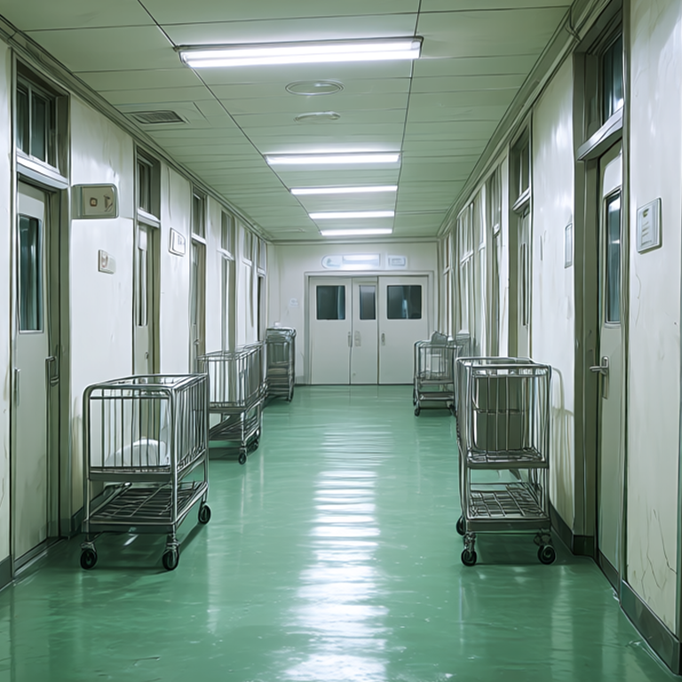
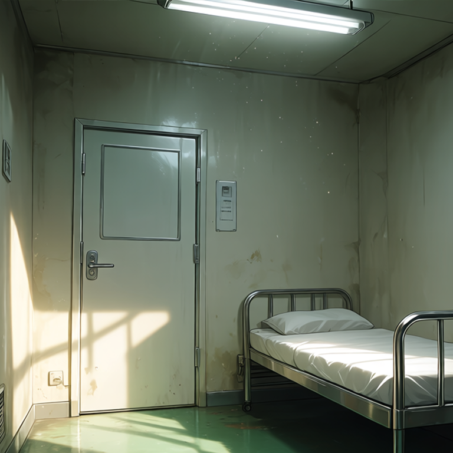
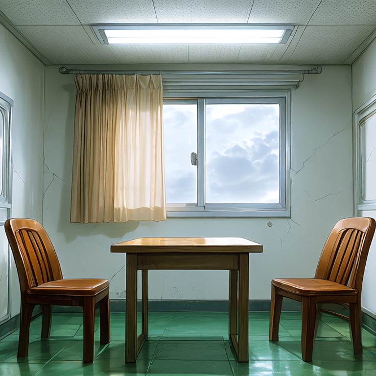
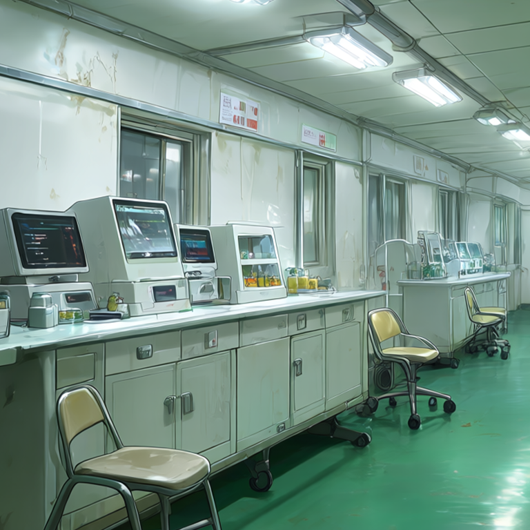
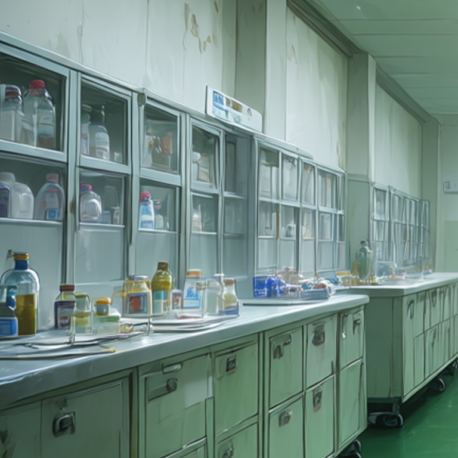
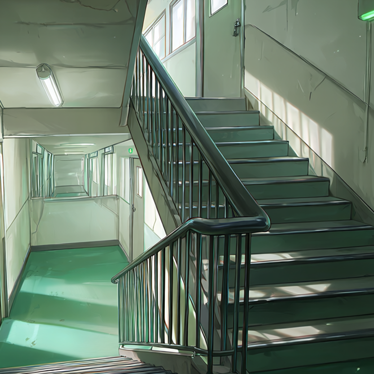
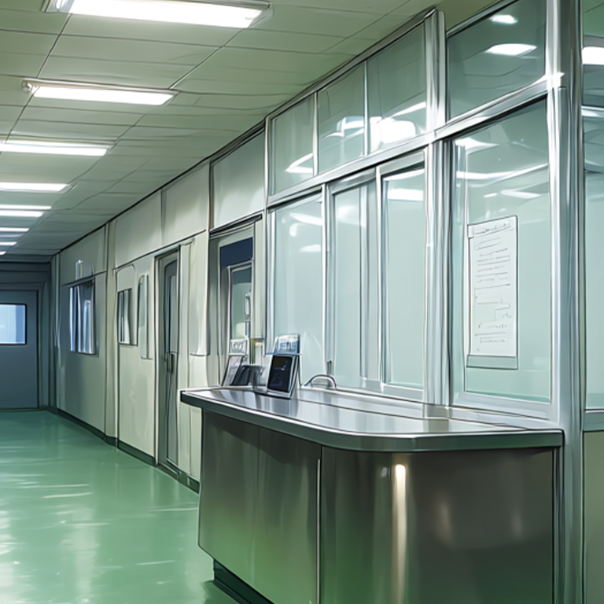
FACILITY MOVEMENT GUIDE
계단은 바로 위·아래층 계단과 연결됩니다
각 층의 개별 공간은 해당 층 복도를 거쳐 이동합니다

FACILITY INTERFACE
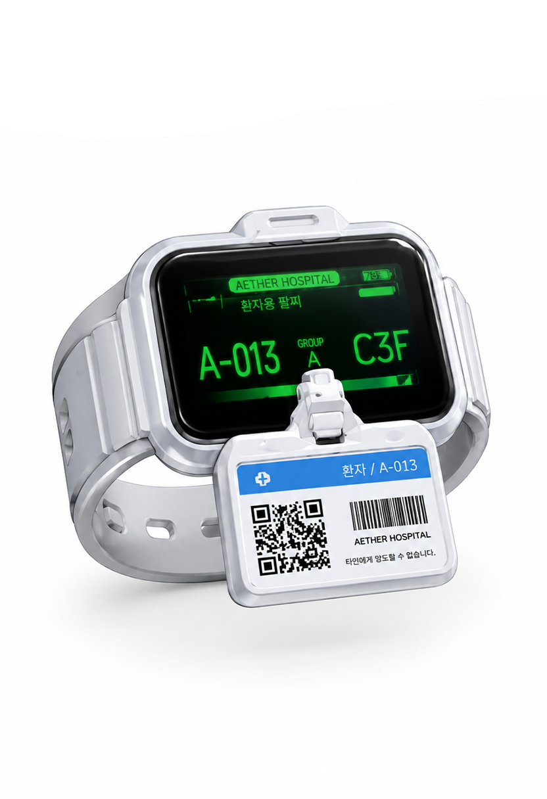
위치, 이동 기록, 출입 권한과 획득 정보를 관리합니다.
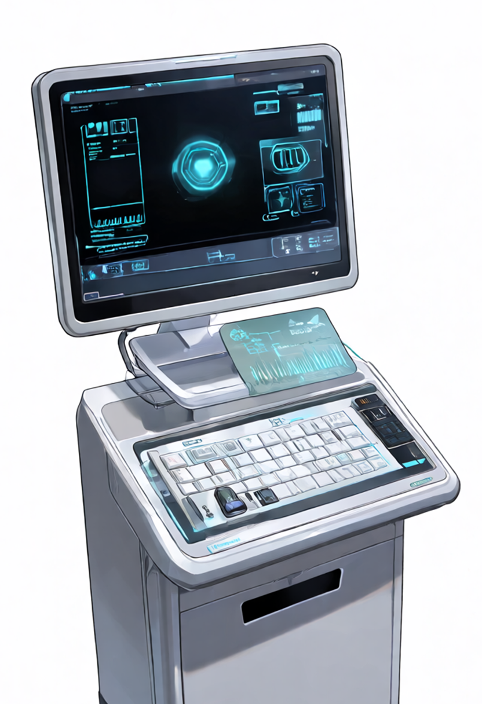
비밀번호, 인증, 퍼즐과 잠금 해제를 담당합니다.
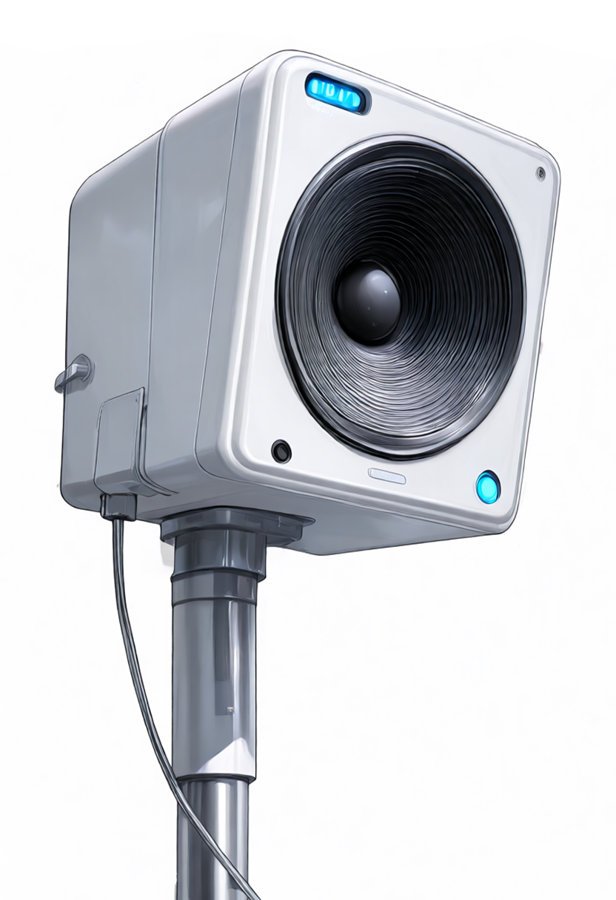
시설 전체에 주요 상황과 경보를 전달합니다.
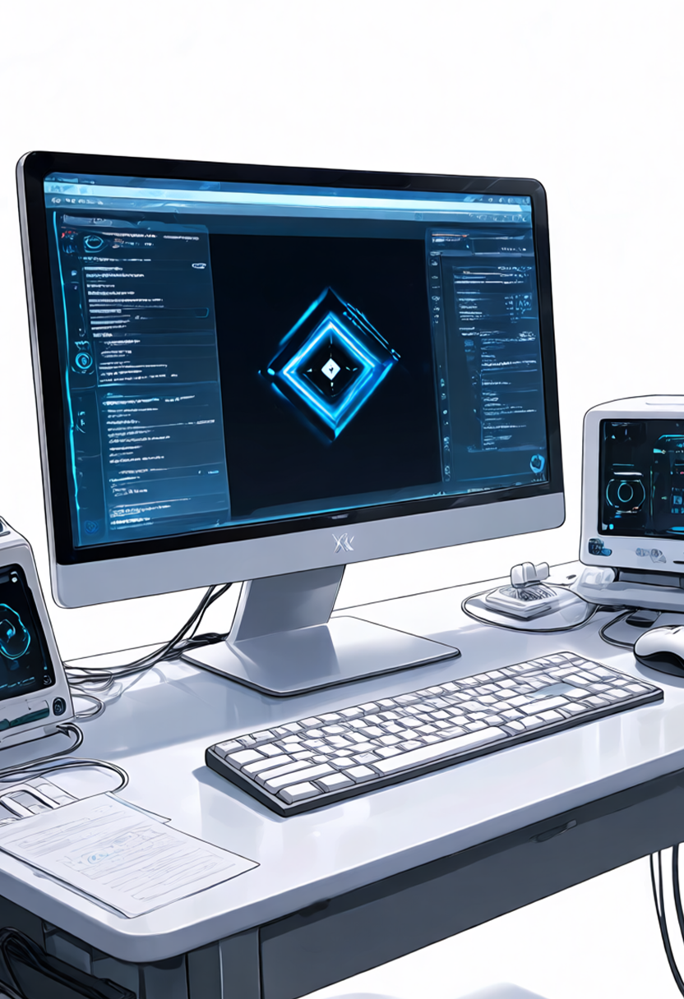
시설 내부 기록과 데이터베이스에 접근합니다.
CAST
MEDICAL STAFF
PATIENTS
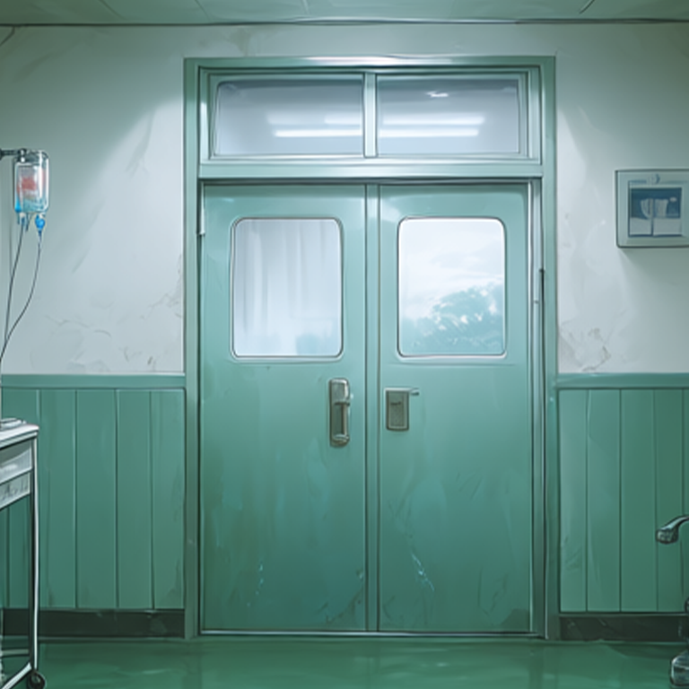